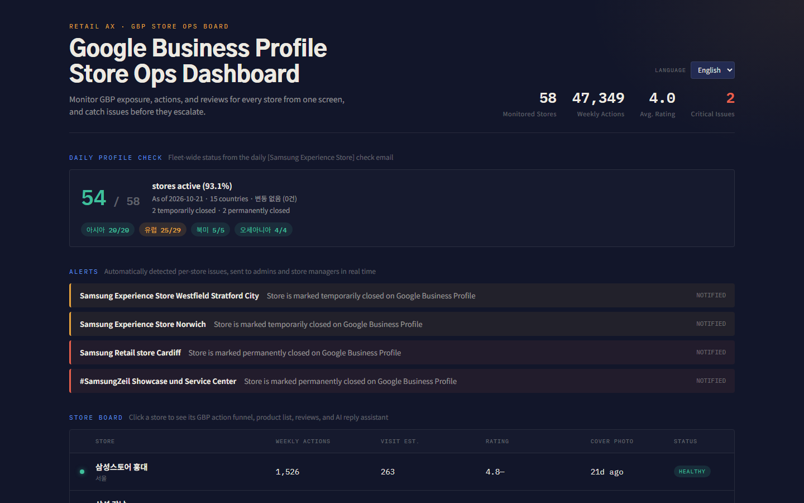

Project
GBP 매장 운영 대시보드
GBP Store Ops Board
여러 나라 매장의 구글 비즈니스 프로필을 한 화면에서 — 이슈 자동 감지와 AI 리뷰 답변

문제
- 글로벌 리테일 매장은 구글 비즈니스 프로필(GBP)이 곧 첫 매장이다. 그런데 평점 하락, 리뷰 급증, 휴·폐업 표시, 오래된 대표 사진 같은 이슈를 매장마다 따로 들어가 확인해야 한다.
- 여러 나라의 리뷰는 언어가 달라서 본사가 한눈에 보기 어렵다.
해결
- 매장별 노출·액션 지표, 판매 제품, 리뷰를 한 화면에서 본다.
- 평점 하락, 리뷰 급증, 휴·폐업 같은 이슈를 규칙으로 자동 감지해 알림 피드에 띄운다. 매장 상태는 정상·주의·긴급으로 나뉜다.
- 리뷰는 원문 언어와 상관없이 원하는 언어로 번역해 볼 수 있다.
- AI가 브랜드 가이드라인에 맞춘 답변 초안을 만든다.
내가 한 일
- 실제 매장 데이터셋(여러 나라 매장)을 앱 구조에 맞게 정리하는 변환 스크립트를 설계했다.
- 이슈 판단 기준을 한곳(alerts 서비스)에 모아, 보드·알림·향후 알림 작업이 같은 기준을 쓰도록 했다.
- 프론트엔드·백엔드·DB·AI 연동으로 이어지는 풀스택 구조를 AI 에이전트와 함께 직접 만들며 익혔다.
기술·구조
- 백엔드: Node.js + Express + Prisma + SQLite
- 프론트엔드: React + Vite (
/api는 백엔드로 프록시) - AI 연동: 번역과 답변 초안을 서버에서 Claude API로 처리한다. 키는 서버에만 두고, 키가 없으면 가상 응답으로 전체 흐름이 동작한다.
- UI 언어(영·한)와 리뷰 번역(AI, 캐시)을 서로 다른 경로로 분리했다.
데이터에 대해
- 매장명, 주소, 평점, 리뷰 수, 운영 상태는 실제 데이터셋 값이다.
- 조회·클릭 같은 성과 지표는 평점과 리뷰 수로 계산한 시뮬레이션 값이다.
- 상품과 샘플 리뷰는 자리 표시용 값이다.
다음 계획
- GBP API 또는 Places API로 매장 정보를 실시간으로 수집하는 에이전트 연결 (
POST /api/import/gbp-urls) - 실제 상품·리뷰 데이터 연동